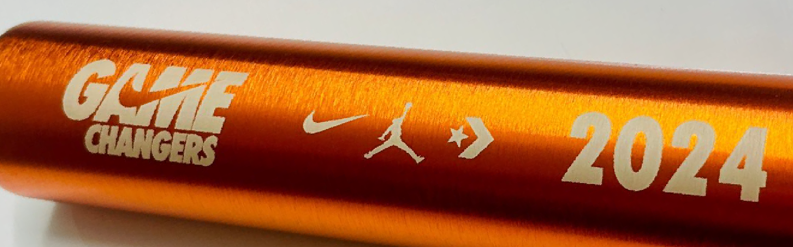
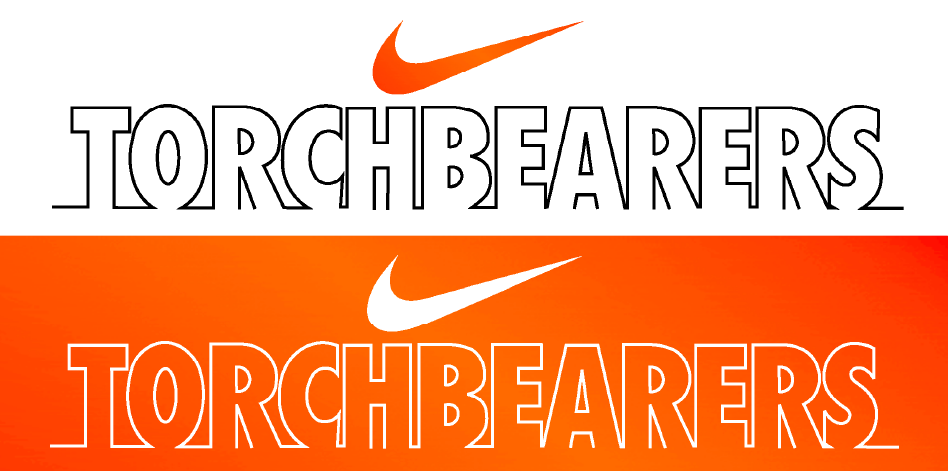
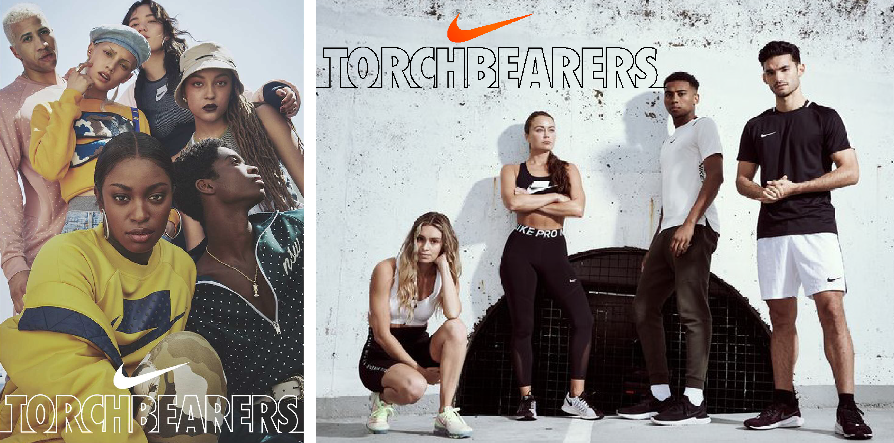
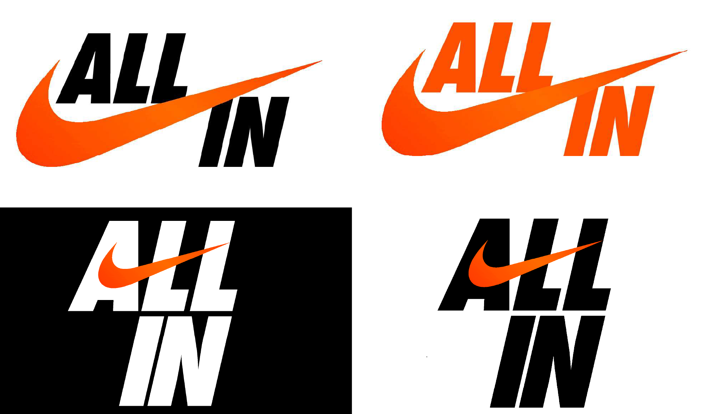
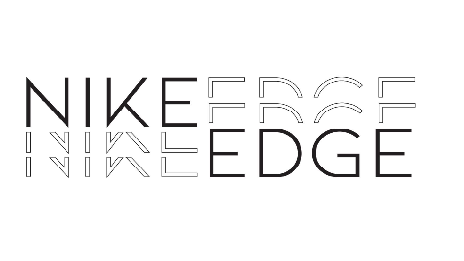
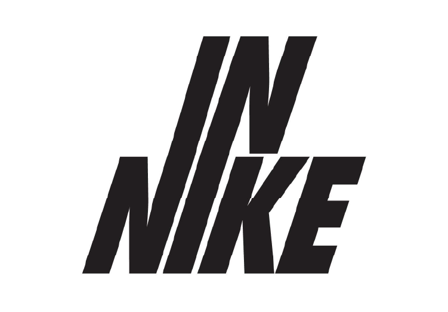
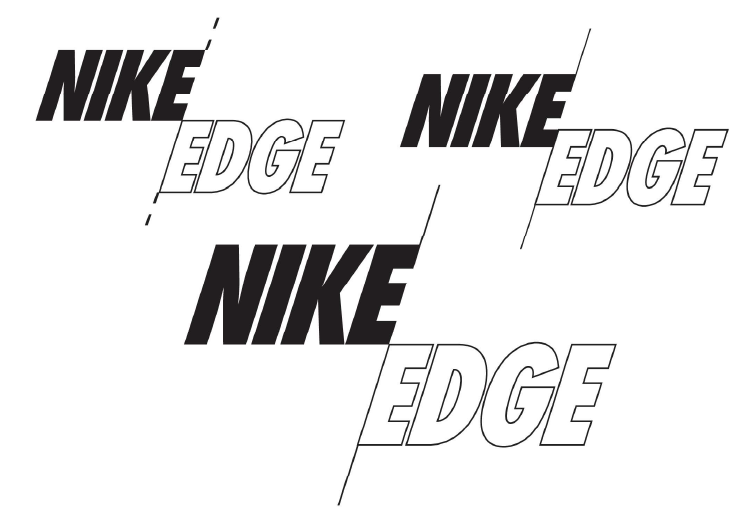
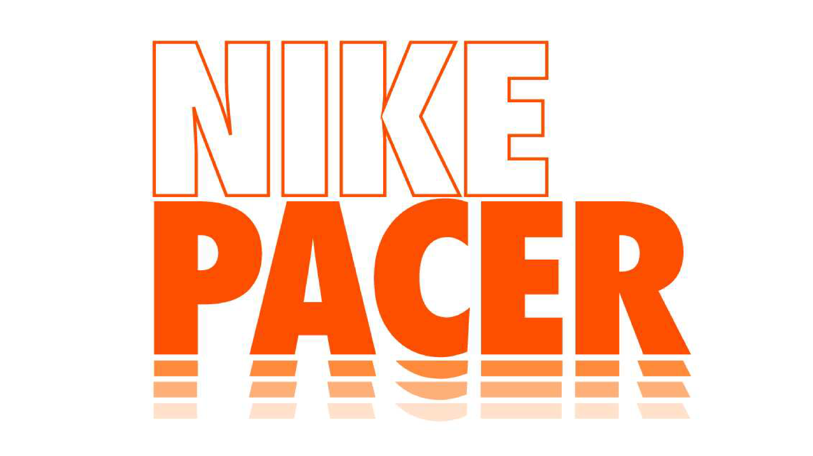

Concept directions for Nike's top-employee recognition program, exploring a range of naming and visual identity routes. Early program titles such as “Nike Edge” ,“Nike Pacer”, and “I.N. Nike” evolved to later frontrunners, including “Nike All In” and “Nike Torchbearers.” Each naming direction was tested with distinct logos and directions. Through collaboration with Nike, the design direction ended with “Nike Game Changers” that aligned with the brand's legacy of performance and inspiration.








Website Hand Coded by Leah Mozeleski
Best Viewed on Desktop